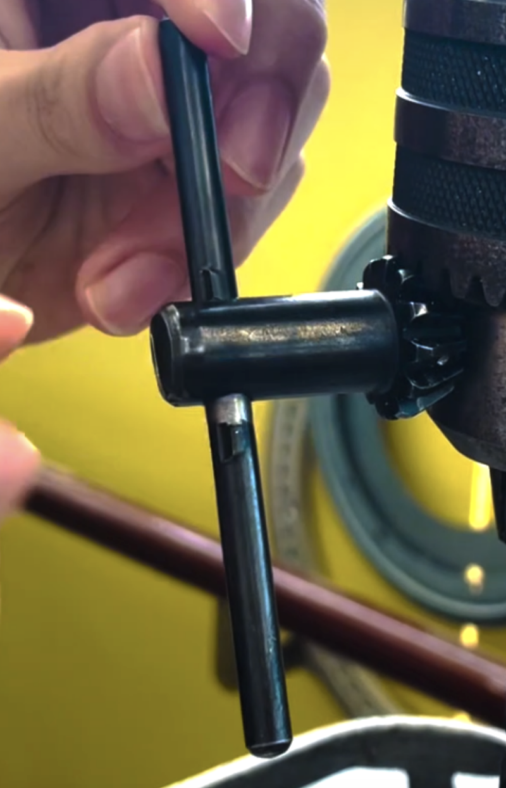
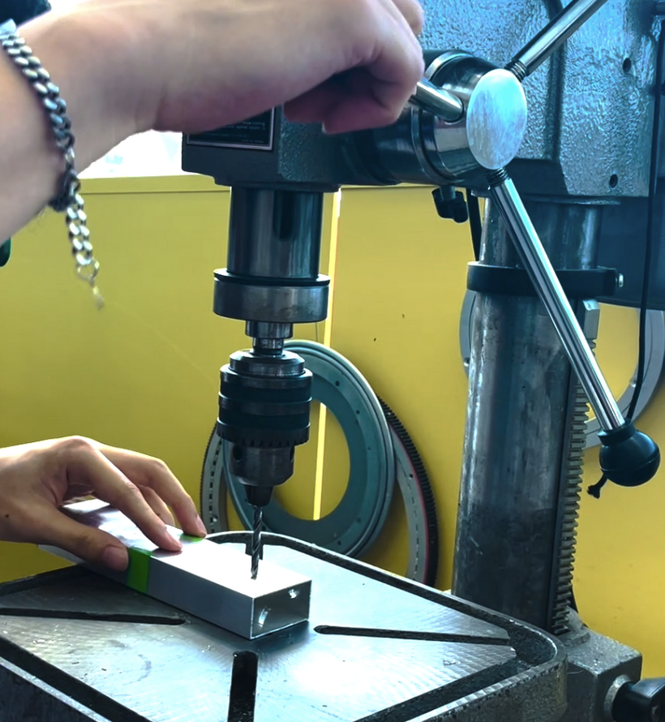

Drill Press
Last updated January 7, 2024
Attention
WEAR SAFETY GOGGLES when using the machine.
Instructions
Part 1: Marking the Spots to Drill
When drilling, you should always know exactly where and how wide you want to drill your box channel/object.
Note
Normally you would use the Omio to “tap” or mark the spots to drill. This is because the Omio is a lot more precise and thus your holes will be aligned. However, in the case that your box channel/object cannot fit in the Omio, you will have to hand mark spots on your box channel/object.
Mark the spots with a hole puncher:

Mark the spot by using a pen/marker.
Secure the box channel and press down hard on the hole puncher.
Caution
There will and should be a loud popping sound as well as a vibration from the hole punch.
Part 2: Switching the Drill Bit
You must switch the drill bit on the drill to the size that creates the hole you want (e.g. 5.0mm vs 3.4mm).
Find the correct size drill bit in the drill bit rack (numbers are marked on the rack from 1.0mm-12.9mm).

When switching the drill bit, you must use the correct tightening/loosening tool (there are many different sizes for different drills):
- 
By matching the grooves on the tool to the drill, lock the tool in place and turn
Tip
Turn counter-clockwise to loosen and vice versa (“lefty loosey righty tighty”).
As you turn, the drill will begin to fall, so be ready to catch it as it slides out.
Caution
Dropping drill bits can chip and break them.
Put the drill bit you want into the slot in the drill and use the tool again to tighten the drill (turn clockwise to tighten.)
Caution
Make sure the drill bit is centered in the slot or else as you tighten the drill the drill bit will be slanted. If drill bits are not tightened, they might fall off while drilling which is dangerous.
IMPORTANT: PUT THE DRILL BIT YOU DON’T WANT BACK ON THE RACK.
Find out the size of the drill bit and put it back in its corresponding slot (the size of the drill bit is normally written in white at the end)
Tip
Use a caliper if the writing has faded out.
Important
Forgetting to put drill bits back is how we lose specific sizes.
{kind=link}
Part 3: Drilling
Align your marked hole to the drill bit:
- 
Lower the drill bit using the three-pronged handle on the side and match the center of the drill bit to the center of your marked hole. Slightly push down on the box channel with the drill to make sure the placement is correct. **Always do this step before drilling and when the DRILL IS OFF. **
Tip
Use the clamp to secure the box channel.

By using a clamp, the drilling process will be a lot more accurate and safe. This is highly recommended but optional if you are under time constraints or you are just making a prototype (however proper building should be present even when making prototypes).
Adjust clamp to fit the box channel and lock the box channel tight. Turn counter clockwise to loosen and vice versa to tighten.
Turning on the drill:

There are two buttons, the top black is to start it and the bottom red one is to stop
Start the drill by pressing the black button
Caution
Never turn on the drill when it is touching the box channel. Always start the drill before you lower it onto the box channel!
Lowering the drill
Lower the drill SLOWLY and push all the way through:
Caution
Drilling too fast can cause the drill bit to be damaged, the part to be damaged, and the drill bit to be stuck. If the drill bit gets stuck, turn the drill off immediately!! Then, secure that part in place, remove the drill bit, and reattach it (but tighter this time and please drill slower!!).
Once the drill bit passes completely through, raise the drill back up slowly. If you feel a lot of resistance, you can try adding oil to the hole.
{kind=link}
Tip
Use an alternate drilling method - Peck Drilling!
Peck Drilling is when you don’t go all the way through and lift up the drill halfway/multiple times during the drilling process.
Why Peck Drilling is better:
It breaks up the chips (created by drilling) from long strands to short strands → less stress on the drill bit.
It allows better heat transfer through excess material
Material is less likely to bend because you are no longer forcing through
Less blowout on the other side of the hole (bottom side).
Turning off the drill:
Press the red button.
Wait until the drill has stopped spinning and remove your part.
Part 4: Etiquette
It is good etiquette to remove your drill bit and put it back on the rack!
Clean residue from drilling if you have time.
ASK IF YOU HAVE ANY QUESTIONS!!!!